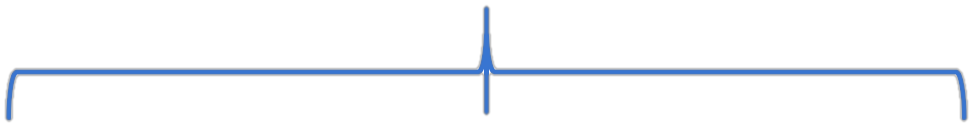

Audio Spatialization creates immersive 3D soundscapes by simulating how sound interacts with space, enabling realistic perception of distance, direction, and movement in virtual environments.


Please wear headphones to listen.
Demo
Text: 你说回去，是不是想和山贼，商量什么？办不到
Spatial Prompt: [DYNAMIC] Moves from front-right to further front-right, then pauses.
Mono

GT
DSP
Bingrad
Text:这里是我的宫殿，这里的一切应由我来指挥。我不是你的犯人，而你却是我的客人
Spatial Prompt: [Static] Source locates at right-back up quadrant, and pauses in right-back up quadrant.
Mono
GT
DSP
Bingrad
Text:挂着联合国旗帜的白色装甲车，一辆辆行驶在通向波黑的路上
Spatial Prompt: [DYNAMIC] Moves from front-left to back-left, passing through center, then pauses at back-left.
Mono
GT
DSP
Bingrad